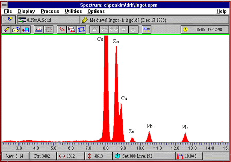

This example spectrum, produced using X-ray fluorescence, shows the presence of various elements within a sample. In this case it showed that the ingot is made of brass, an alloy of copper and zinc. It therefore cannot be classed as Treasure, but it is still an interesting, rare object and one that was only studied and recorded because it was thought to be gold.
The new Treasure law sometimes lets us study unusual objects, like this 15th century copper alloy buckle found in Norfolk which has been coated with a thin layer of silver using a rare technique known as mercury-silvering.
The Portable Antiquities scheme
For a full list of Publications: Scientific
Publications